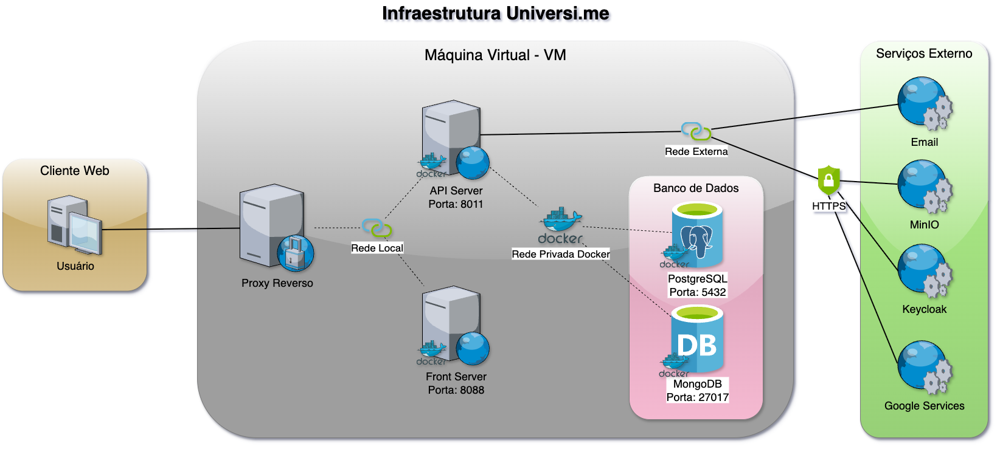

Introdução
O Universi.me é uma aplicação web, uma plataforma de desenvolvimento social voltada para o acompanhamento de pessoas, podendo ser utilizada no contexto acadêmico e profissional. A rede social permite que seus usuários compartilhem informações acadêmicas e profissionais, criando redes de pessoas conectadas por projetos ou atividades em comum.
A arquitetura do Universi.me é composta por diversos serviços interconectados: um servidor de API baseado em Spring Boot, um front-end em React e TypeScript, bancos de dados PostgreSQL e MongoDB, além de integrações com MinIO (armazenamento de imagens) e Keycloak (autenticação).
Infraestrutura e Processo de Implantação da Plataforma Universi.me

A infraestrutura é composta por diversos componentes interligados, cada um com funções específicas que, juntos, garantem o funcionamento integrado da aplicação. No núcleo do sistema está o API Server. Ele é responsável por processar as requisições vindas do Cliente Web e de acessar, quando necessário, via conexão segura, serviços externos como MinIO, Keycloak, Google Services e Email. Para a persistência dos dados utilizamos o banco de dados PostgreSQL e MongoDB comunicando-se através de uma rede interna privada interligada entre si. E para permitir a comunicação com o usuário, utiliza-se um proxy reverso para redirecionar e expor os serviços Front e API Server, tornando o acesso público e acessível ao usuário final.
| Componente | Função |
|---|---|
| API Server | Processa requisições e conecta com serviços externos |
| Front-End | Interface gráfica em React/TypeScript |
| Banco de Dados | PostgreSQL (relacional) e MongoDB (não relacional) |
| Proxy Reverso | Nginx para expor serviços |
| Serviços Externos | MinIO, Keycloak, Google Services, Email |
Serviço do Front
O Front é a camada de interface da aplicação é através dele que os usuários
interagem, desenvolvida em React, TypeScript e Docker, configurado como projeto
NPM, o serviço, ao iniciar, fica disponível para acesso via HTTP na porta 5173 em
modo de desenvolvimento e porta 4173 em modo preview (o número da porta pode
se auto incrementar caso a porta esteja em uso no momento). Link do repositório
disponível no GitHub:
Repositório: github.com/universi-me/universi-front
Variáveis de Ambiente
As variáveis ambiente do serviço do Front podem ser definidas no processo
de implantação no arquivo .env. A tabela a seguir lista as variáveis ambientes e
suas respectivas descrições e valores.
| Variável | Descrição | Valor Padrão |
|---|---|---|
VITE_UNIVERSIME_API |
Domínio da API utilizada pelo front | http://localhost:8080/api |
VITE_BUILD_HASH |
Tipo de build (versão atual) | development |
Serviço da API
O serviço da API é a camada de comunicação com o Cliente Web,
desenvolvido em API REST com Spring Boot, Java e Docker, estruturado como
projeto Maven, ao iniciar a aplicação, o serviço fica disponível para acesso via HTTP
na porta padrão 8080. Link do repositório disponível no GitHub:
Repositório: github.com/universi-me/universi-api
Variáveis de Ambiente
Por padrão as variáveis ambiente do serviço da API seguem um padrão de formato começando com API_, esse padrão de formato tem a finalidade de localizar e identificar uma variável ambiente configurável. Todas as variáveis ambientais podem ser localizadas no arquivo application.yml e definidas durante o processo de implantação no arquivo .env. A tabela a seguir lista as variáveis ambientes e suas respectivas descrições e valores.
| Variável | Descrição | Valor Padrão |
|---|---|---|
API_PROFILE_ACTIVE |
Modo de Execução. Responsável por definir o modo de execução da aplicação (test, dev, prod) |
dev |
API_SERVER_PORT |
Porta utilizada pelo servidor para receber requisições HTTP. | 8080 |
API_DB_NAME |
Nome da base de dados. Responsável por definir o nome da base de dados a ser utilizado nos serviços de base de dados. | universime_api |
API_DB_DOMAIN |
Domínio do banco de dados. Endereço ou domínio onde o banco de dados está hospedado. | localhost |
API_DB_PORT |
Porta do banco de dados. Porta utilizada para conexão com o banco de dados. | 5432 |
API_DB_USER |
Usuário do banco de dados. Nome de usuário para autenticação no banco de dados. | postgres |
API_DB_PASS |
Senha do banco de dados. Senha de acesso ao banco de dados. | postgres |
API_DB_MONGO_HOST |
Host do MongoDB. Variável para definir o host do MongoDB. | API_DB_DOMAIN |
API_LOCAL_ORGANIZATION_ID_ENABLED |
Habilitar ID local de organização. Define se a funcionalidade de organização local está habilitada. | false |
API_LOCAL_ORGANIZATION_ID |
ID local da organização. Identificador padrão do grupo da organização. | ccae |
API_RECOVERY_TOKEN_EXPIRATION_HOURS |
Expiração de recuperação de senha. Tempo de expiração do token de recuperação de senha (em horas). | 168 |
API_JWT_SECRET_KEY |
Chave secreta do JWT. Define a chave secreta utilizada para assinar tokens JWT. Caso esteja vazio, a plataforma automaticamente gera uma chave secreta randômica a cada inicialização. | Vazio |
API_JWT_EXPIRATION |
Tempo de expiração do JWT. Tempo de expiração do token JWT em segundos. | 3600 |
API_MINIO_ENABLED |
Ativar serviço MinIO. Define se a integração com o serviço de armazenamento MinIO está habilitada. | false |
API_MINIO_URL |
URL do MinIO. Endereço de acesso ao servidor MinIO. | http://localhost:9000 |
API_MINIO_ACESSKEY |
Chave de acesso MinIO. Chave de acesso (Access Key) do MinIO. | 9JwDwrutRQrywpBFH9ks |
API_MINIO_SECRET |
Chave secreta MinIO. Chave secreta (Secret Key) do MinIO. | kEtizmyDs70XSm0JVIbLACH2zDv1TOeCawhZ7qWb |
API_MINIO_BUCKET |
Bucket MinIO. Nome do bucket utilizado no MinIO. | universime |
Proxy Reverso
O proxy reverso tem um papel de controlar o acesso aos serviços Front e API (back), esse processo consiste em expor uma porta pública que atua como ponto de entrada do sistema.
Essa porta é representada por um socket (IP+porta), que recebe todas as conexões externas. As requisições recebidas nesse socket são então redirecionadas para o socket interno correspondente (porta interna do serviço apropriado), garantindo que o tráfego externo chegue corretamente ao serviço correspondente dentro do ambiente.
O proxy reverso utilizado atualmente é o Nginx, por ser o mais popular e apresentar bom desempenho, nele configuramos para expor os dois serviços Front para o caminho / e o serviço API para o caminho /api.
Banco de dados
Para a persistência dos dados utilizamos bancos de dados distintos a depender do tipo de dado sendo armazenado. O PostgreSQL e MongoDB são utilizados, configurados na mesma rede privada do serviço de back (API), porém também podem ser configurados para serem acessados através de conexão remota. O PostgreSQL é utilizado para dados relacionais, como por exemplo registros de usuários, grupos e dados dos seus perfis. O MongoDB é atualmente utilizado para armazenar informações não relacionais como por exemplo dados de publicações, comentários nas publicações e reações em publicações.
Serviços Externos
Para manter o desempenho, segurança e acessibilidade, o Universi.me acessa alguns serviços externos para armazenamento de imagens, processo de autenticação e proteção contra robôs que podem ser utilizados.
MinIO
Esse serviço é responsável pelo armazenamento de arquivos de forma segura e rápida, atualmente utilizado na plataforma para armazenamento de imagens, como por exemplo imagens de perfis, imagens de postagens, logos de grupos e banner de grupos. Acessado externamente em um domínio seguro isolado da plataforma, garantindo proteção aos dados e desempenho.
Keycloak
O Keycloak é uma plataforma de gerenciamento de usuários. Ele é utilizado para o processo de autenticação na plataforma utilizando a tecnologia OIDC (OpenID Connect) em conjunto com o processo de autenticação Flow, onde a plataforma envia o usuário para a página de autenticação do serviço Keycloak e assim que for autenticado o usuário recebe um token e é redirecionado de volta para a plataforma para concluir o processo de autenticação e permitir o acesso ao Universi.me. Este serviço é opcional e pode ser configurado no painel de configurações da plataforma Universi.me. Quando este serviço não está em uso, os usuários são autenticados na API usando tokens JWT (Json Web Tokens).
O serviço de email é utilizado para a funcionalidade de envio de notificações da plataforma e recuperação de conta via e-mail. Esse serviço se conecta a um servidor SMTP/SMTPS (Simple Mail Transfer Protocol) externo para envio de emails. O serviço pode ser configurado através do painel de configurações da plataforma Universi.me.
Google Services
O Google Services é utilizado opcionalmente para a funcionalidade de autenticação da plataforma através da ação entrar via conta Google e também é utilizada a funcionalidade reCaptcha Enterprise opcionalmente para a proteção dos formulários públicos na plataforma como o Login, Cadastrar-se e Recuperação de Conta.
Implantação da Plataforma
Para a implantação da plataforma iremos considerar uma VM (Máquina Virtual) dedicada para utilizarmos no ambiente de trabalho. Essa VM atua como um servidor isolado, para podermos gerenciar os recursos necessários para implantação.
Instalação das Dependências
Para prosseguir com o processo de implantação da plataforma é necessário instalar algumas dependências no servidor principal (ou VM) que iremos utilizar para o ambiente de trabalho. Para podermos ter a possibilidade de, por exemplo, orquestrar containers, serviço de proxy reverso, clonar repositórios e editar arquivos via terminal.
Execute o seguinte comando para instalar as dependências necessárias
(Docker, docker-compose, Nginx, Git e nano) utilizando o gerenciador de pacotes
APT:
Clonar Repositórios
Após a instalação das dependências, iremos criar uma pasta de trabalho para clonar o repositório localmente, utilizamos o comando git clone especificando o repositório da API:
e depois para clonar localmente o Front utilizamos o comando:
Configurando e iniciando o serviço API
Navegamos para a pasta do repositório universime-api e para
configurarmos as variáveis ambientes de acordo com as necessidades, para
definirmos as variáveis ambiente podemos utilizar o arquivo .env, para editar
utilizamos o comando:
Após editamos as variáveis salvamos utilizando Control+X.
Por padrão no arquivo de configuração do docker-compose
docker-compose.yml a porta exposta para o serviço da API é 8011, podendo ser
alterada utilizando o comando:
Antes de iniciarmos a API precisamos fazer o build da imagem utilizando o comando:
Depois, caso o serviço da API já esteja ativo anteriormente:
Para iniciarmos o serviço em background utilizamos o comando:
Configurando e iniciando o serviço Front
Para o Front, o processo é semelhante ao do serviço da API. Navegamos
para a pasta do projeto universi-front, editamos as variáveis de ambiente no
arquivo .env através do comando:
Após editamos as variáveis salvamos utilizando Control+X.
Por padrão a porta exposta do serviço é 8088, podendo ser alterada pelo
comando:
Depois fazemos o build com o comando:
Paramos o serviço caso já esteja ativo:
E iniciamos o serviço com o seguinte comando:
Configurando o Nginx
Para configurar o Nginx criamos um novo arquivo de configuração através do comando:
Em seguida configuramos o proxy reverso para o serviço API o caminho
/api para a porta escolhida, que no nosso caso é 8011 e para o serviço do Front o
caminho / para a porta escolhida 8088, um exemplo de configuração mostrado na
figura abaixo.
Após salvar o arquivo, precisamos habilitar utilizando o seguinte comando para criar um link simbólico:
Em seguida reiniciamos o serviço Nginx para aplicar as alterações através do comando:
Problemas comuns, soluções e dicas
Desempenho do Sistema
O serviço da API pode apresentar problemas de desempenho. Para verificar se o desempenho é um problema, podemos utilizar uma ferramenta de inspeção como por exemplo a ferramenta Web DevTools no navegador Web Chrome. Ao usar essa ferramenta, na aba de rede, podemos visualizar todas as requisições feitas a partir do cliente web para o serviço da API. Na coluna tempo podemos ver o tempo de execução de cada requisição: se esse valor for elevado como por exemplo 1 segundo ou mais podemos caracterizar em um possível problema de desempenho, podemos considerar o valor ideal de tempo de resposta como sendo abaixo de 1 segundo, quanto menor esse tempo melhor.
Para identificar esse problema podemos analisar primeiramente algumas classes que têm uma interação frequente durante a execução do sistema, como por exemplo as classes User, Profile e Group. Os atributos que são compostos dessas classes, como por exemplo do tipo listagens, são aconselháveis sempre utilizar anotações com o tipo de carregamento dos valores em banco com atraso (FetchType.LAZY), assim essas entidades são carregadas rapidamente e possibilitando obter os valores de seus atributos no banco de dados quando realmente for necessário, acessado pelo método get de seu atributo, como por exemplo que ocorre durante uma serialização Json para construir a resposta para a aplicação do cliente web. O trecho de código a seguir mostra um exemplo de utilização da anotação com o tipo de carregamento em atraso em um atributo do tipo lista:
Caso precise reproduzir a lentidão em uma máquina local de desenvolvimento, precisamos obter ou criar uma database semelhante ou volumosa com muitos dados inseridos para testes. Reproduzindo o problema localmente facilita no processo de identificação e correção do problema.
Problemas de Inicialização
O serviço da API pode falhar durante a inicialização por vários motivos, é importante analisarmos o log de inicialização para identificar o problema relacionado.
Uma falha comum que pode ocorrer é problema na comunicação com o banco de dados caso o serviço do banco de dados não esteja disponível ou configurado incorretamente nas variáveis ambiente do serviço da API como o domínio ou porta especificada incorretamente causando falha de conexão recusada.
Pode também ocorrer falha de migração na database durante a inicialização, podemos enfrentar esse problema quando utilizamos uma diversidade de implantações e quando atualizamos a versão do serviço da API em uma implantação podemos enfrentar erros no script de migração que é executado durante a inicialização, para corrigir verificamos o log de inicialização para identificar o nome do script de migração e o erro relacionado que causou a falha de migração para localizar e solucionar o problema.
Release de Uma Nova Versão
No repositório do serviço tanto da API quanto do Front, possui um Workflow do Github Actions que é executado automaticamente quando publicamos uma Release podendo ser acompanhado o progresso na aba Actions do repositório, esse script de workflow é responsável por fazer um build de uma imagem docker e publicar no Registry do Github, esses imagens ficam disponiveis em: https://github.com/orgs/universi-me/packages
Essas imagens servem para facilitar o deploy do serviço utilizando apenas a imagem docker, podendo ter a possibilidade de por exemplo utilizarmos a imagem para um deploy em Kubernetes.